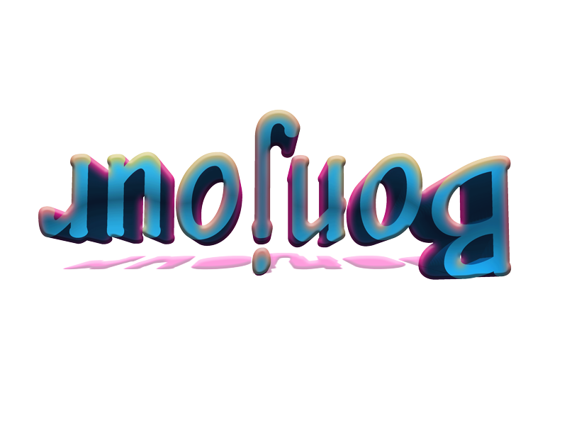
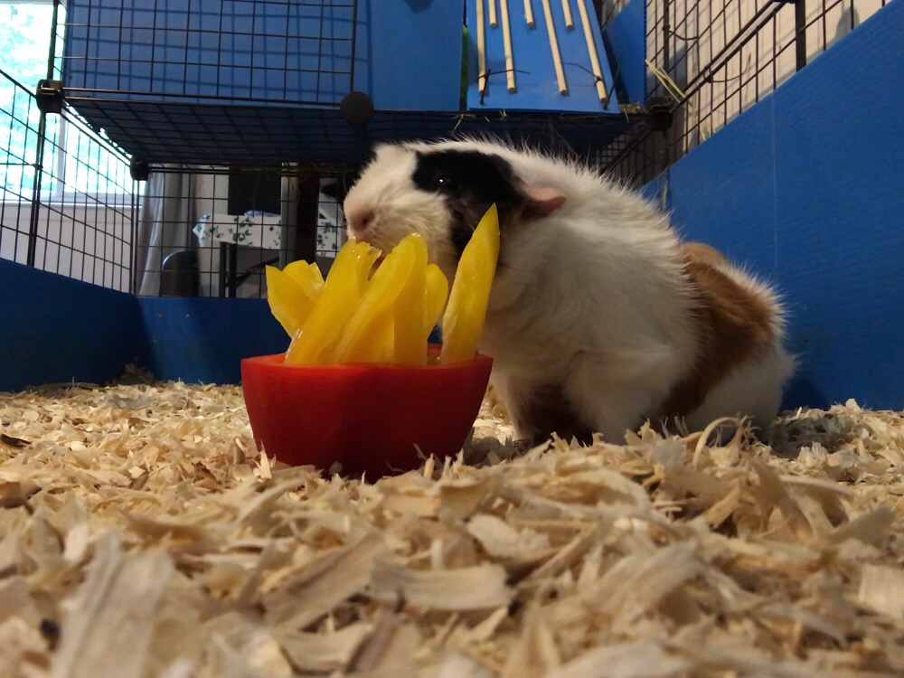
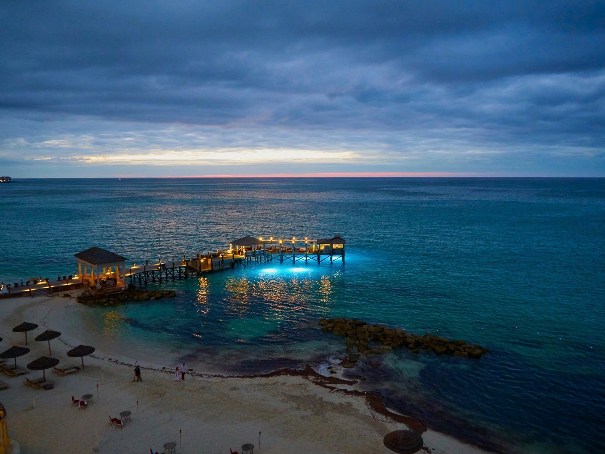
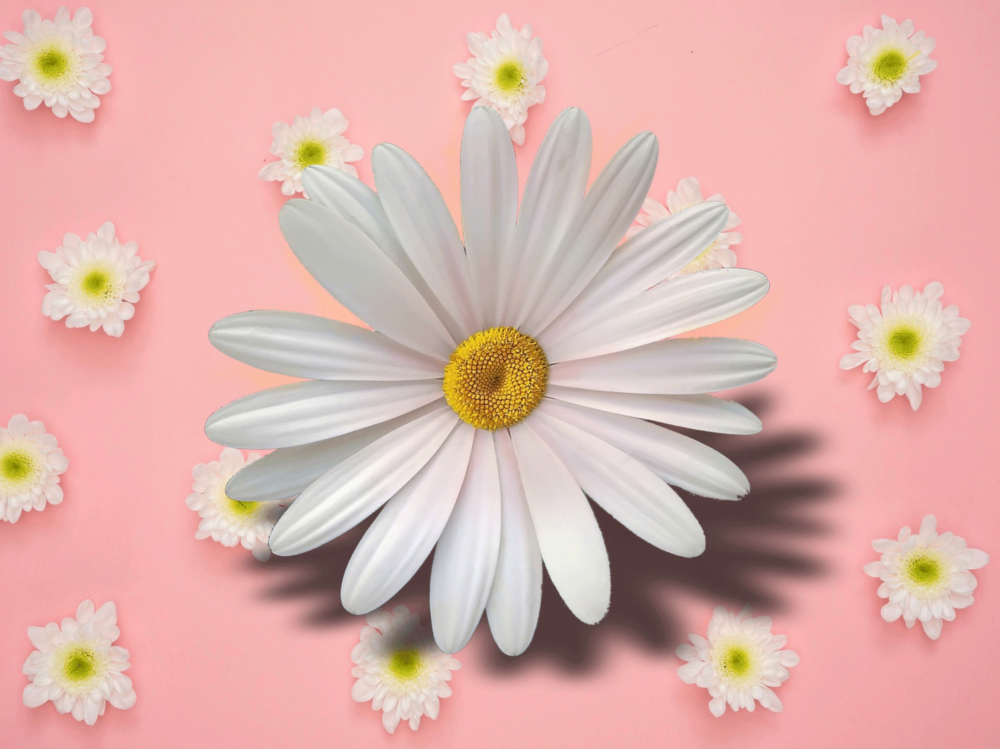
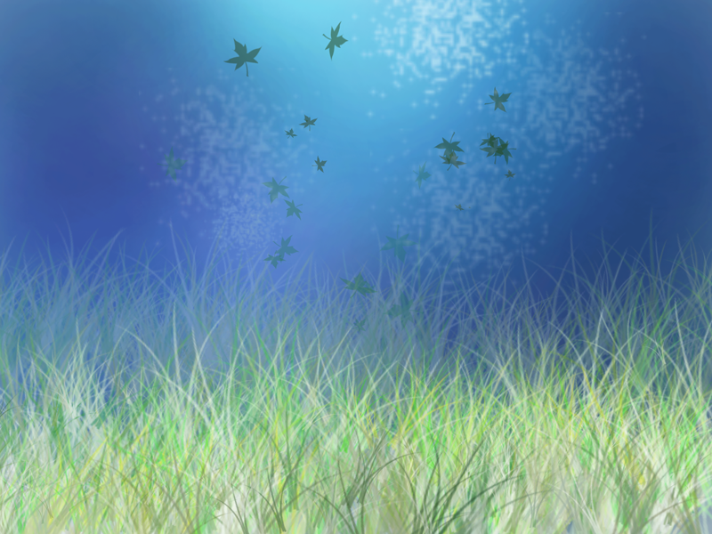
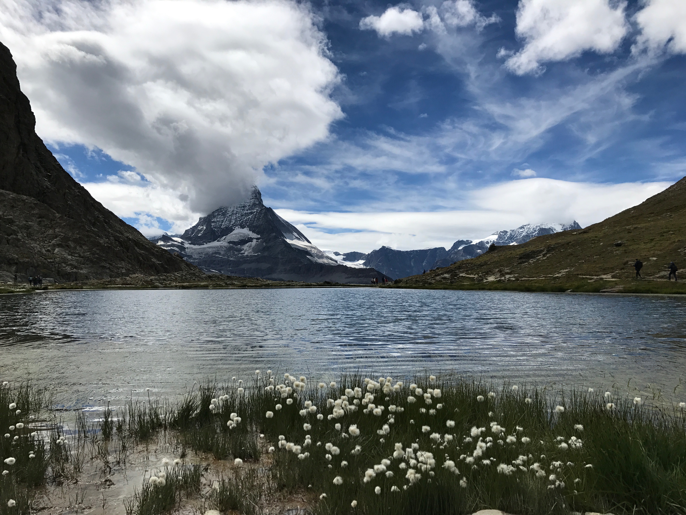

|  | This is a three-dimensional text I created on Adobe Photoshop. I started by creating the text, and then I used the 3-D feature in the upper right corner to add depth, color, and rotation.
Origin: created in Photoshop Adobe CC Image Type: PNG Size of Image in Pexels: 800 x 600 File Size: 152 KB |
| This is a picture of my guinea pig, Creampuff. My other guinea pig, Cinnamon, is hidden in the back. I made them guinea pig french fries by carving out a red bell pepper and putting yellow pepper slices into it.
Origin: taken on iPhone Image Type: JPEG Size of Image in Pexels: 1000 x 750 File Size: 197 KB |
 |
|  | This is an image found online of paradise.
Origin: pexels.com Image Type: GIF Size of Image in Pexels: 1672 x 1254 File Size: 340 KB |
| This image was created from the merging of two pictures found on the web. The first picture is the pink background with small white flowers. The second orginal picture was the large flower on top of a hazy blue background. The flower was cut from its original background and pasted onto the other image.
Origin: both orginal images from pexels.com, then modified on Photoshop Adobe CC Image Type: GIF Size of Image in Pexels: 1929 x 1446 File Size: 1.4 MB |
 |
|  | This is a drawing I created on Photoshop. I started with a transparent background, then colored the background and finally added the details. Upon first glance, this picture appears to be an underwater scene with frothy bubbles, seaweed and the light filtering in through the surface. But on another level, the blue water is really the sky set against a field of grass, and leaves are floating down in the air.
Origin: created in Photoshop Adobe CC Image Type: PNG Size of Image in Pexels: 800 x 600 File Size: 658 KB |
| This is a picture I took in Switzerland. Despite it being summertime, the weather was crisp and majestic snow-capped mountains surrounded our hotel.
Origin: taken on iPhone Image Type: JPEG Size of Image in Pexels: 4032 x 3024 File Size: 5.9 MB |
 |
SOURCES:
image 3 from pexels.com
original two images for image 4 from pexels.com